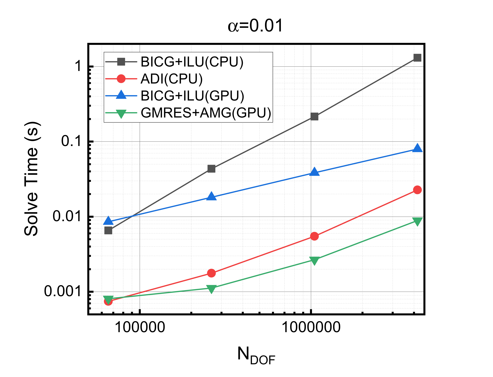
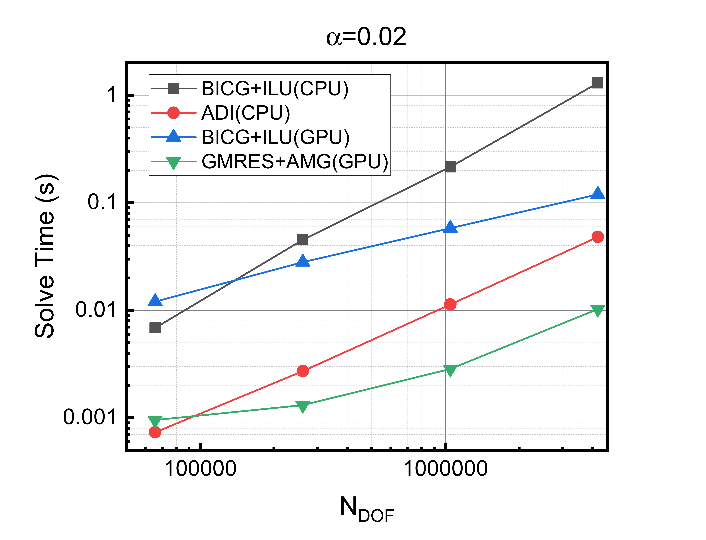
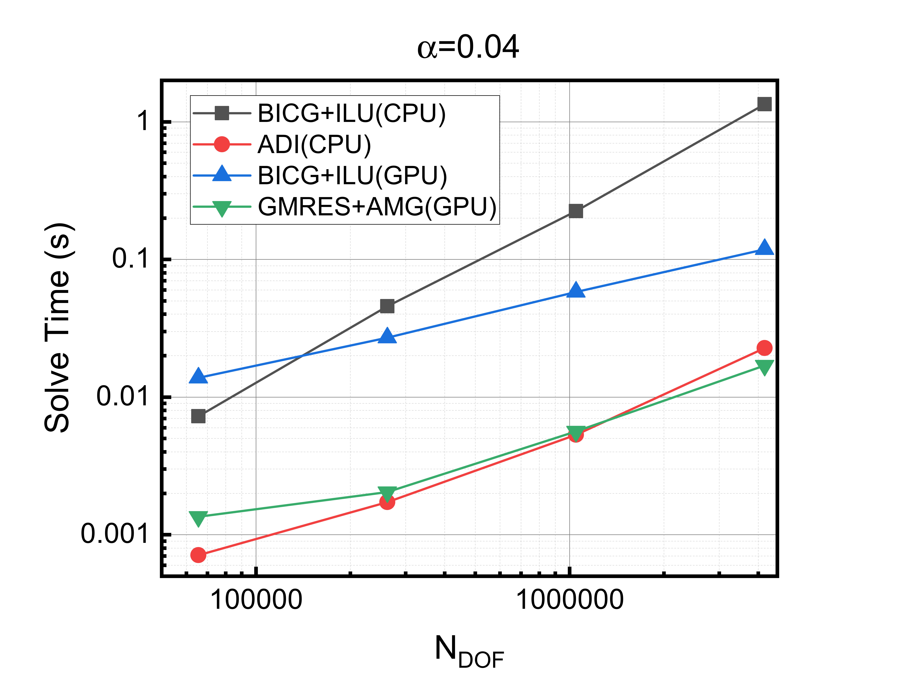
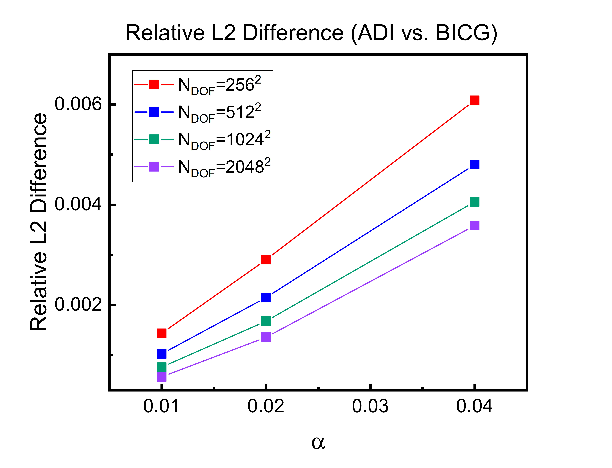

This respository provides a performance comparison of different numerical methods for solving elliptic PDEs of the form (I - \alpha\nabla^2)m = f, which frequently arise in projection-type methods with diffusion-like operators. As an example, such systems appear in Gauss–Seidel projection methods for the Landau–Lifshitz–Gilbert equation in micromagnetic simulations. The test problem is defined on a 2D square domain \Omega_{\mathrm{c}}=[0,N]\times[0,N], and a defect in the center \Omega_{\mathrm{d}}=[\frac{N-N_d}{2},\frac{N+N_d}{2}]\times[\frac{N-N_d}{2},\frac{N+N_d}{2}], where the value of m is fixed. The PDE is solved in \Omega_{\mathrm{c}}\setminus\Omega_{\mathrm{d}}, with Neumann boundary condition applied. This PDE is solved via regular iterative solvers on both CPU and GPU, and an Alternating Direction Implicit (ADI) method that obtains a good approximate solution when \alpha is small and is quite efficient compared to general solvers.
The ADI method decomposes the 2D Laplacian operator using operator splitting (when \alpha is small):
This allows the 2D problem to be solved as two sequential 1D tridiagonal systems using the Thomas algorithm, achieving O(N) complexity. This is parallelized with OpenMP on CPU.
Traditional iterative method with incomplete LU factorization. Implemented with Eigen and PETSc with CUDA. This method is more CPU friendly as ILU preconditioning requires sequential triangular solves.
Krylov subspace method with multigrid preconditioning. Implemented with PETSc with CUDA. This method is more GPU friendly due to the efficiency of multigrid preconditioning on parallel architectures.
CPU:
GPU:
ℹ️ To learn how to install these dependencies, visit their official installation guides linked above.
See
THIRD_PARTY_NOTICES.mdfor third-party licenses and attributions.
cd src
# Edit src/cpu/compile_cpu.sh and src/gpu/compile_gpu.sh first to custom your environment variable
bash ./compile_all.sh
# Generate test data
cd src/f_vec
./generate_f 2048 512 2048_512_f.bin
./generate_f 1024 256 1024_256_f.bin
./generate_f 512 128 512_128_f.bin
./generate_f 256 64 256_64_f.bin
# Run CPU benchmarks
cd src/cpu
./run_cpu.sh > cpu_output
# Run GPU benchmarks
cd src/gpu
# Edit run_gpu.sh first to custom your environment variable
./run_gpu.sh > gpu_output
# Collect and analyze results
python collect_cpu.py ./cpu_output --out_csv cpu_results.csv
python collect_gpu.py ./gpu_output --out_csv gpu_results.csv
For demonstration, the solvers are benchmarked with 4 systems with sizes N=2048,1024,512,256, and with N_{d}=N/4. Each system has N_{\mathrm{DOF}}=N^2 degrees of freedom. The parameter \alpha is set to be 0.01, 0.02, and 0.04. For each method, it is solved 10 times and average solve time is taken for stability. Finally the solver runtime is plotted against the number of degrees of freedom. All CPU benchmarks were performed on 32 CPU threads on Intel Gold 6248R CPU, and the PETSc programs with CUDA are on a single NVIDIA A100 GPU. In addition, the relative L2 differences ||x_{\mathrm{ADI}}-x_{\mathrm{iterative}}||_2/||x_{\mathrm{iterative}}||_2 for different \alpha values are shown. Here are results:

Figure 1: Solve time comparison for \alpha=0.01.

Figure 2: Solve time comparison for \alpha=0.02.

Figure 3: Solve time comparison for \alpha=0.04.

Figure 4: Relative L2 difference for different N,\alpha.
The author thanks Professor Carlos J. García Cervera at UC Santa Barbara for suggesting the ADI algorithm.
MIT License - Copyright (c) 2025 Hongyi Guan
See LICENSE file for full license text.